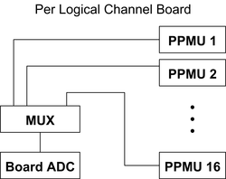
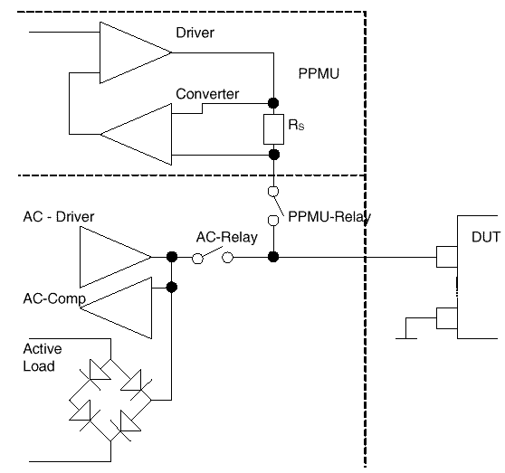

Per Pin PMU: Theory of Operation
The hardware of the V93000 is optimized for highest throughput. In order to support this in the domain of DC measurements every digital pin is equipped with a PPMU. This per pin PMU can either force currents and compare against voltage limits or force voltages and compare against current limits.
In addition the DC signal may be converted into a digital value in order to do an analog measurement rather than a pass/fail measurement. However taking analog readings is not optimized for highest throughput, 16 channels share the analog to digital conversion unit, as shown in the figure below.

The figure below shows a block diagram of the per pin PMU (PPMU). The PPMU can operate in all four quadrants that are possible when forcing voltages or currents (sinking or sourcing currents at positive or negative voltages).

|
Current range |
Sense resistor Rs |
|
|---|---|---|
|
PS1600 |
||
|
1 |
± 40 mA |
12.5 Ω |
|
2 |
± 1 mA |
500 Ω |
|
3 |
± 100 μA |
5 kΩ |
|
4 |
± 10 μA |
50 kΩ |
|
5 |
± 2 μA |
250 kΩ |
Functional changes
- Introduced before SmarTest 6.3.2